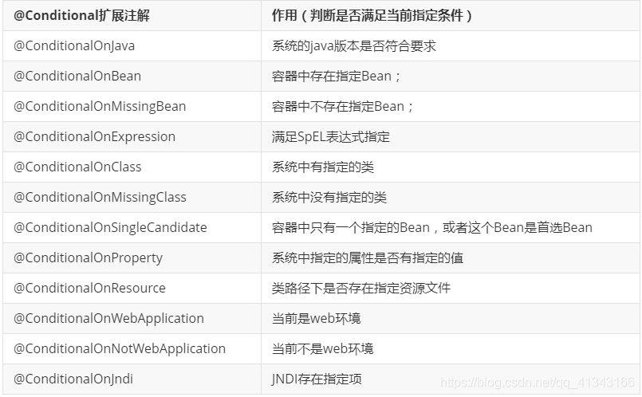

SpringBoot常用注解
Spring Web MVC 注解
@RequestMapping
@RequestMapping注解的主要用途是将Web请求与请求处理类中的方法进行映射。Spring MVC和Spring WebFlux都通过RquestMappingHandlerMapping和RequestMappingHndlerAdapter两个类来提供对@RequestMapping注解的支持。
@RequestMapping注解对请求处理类中的请求处理方法进行标注；@RequestMapping注解拥有以下的六个配置属性：
value:映射的请求URL或者其别名method:兼容HTTP的方法名params:根据HTTP参数的存在、缺省或值对请求进行过滤header:根据HTTP Header的存在、缺省或值对请求进行过滤consume:设定在HTTP请求正文中允许使用的媒体类型product:在HTTP响应体中允许使用的媒体类型
提示：在使用@RequestMapping之前，请求处理类还需要使用@Controller或@RestController进行标记
@RequestMapping还可以对类进行标记，这样类中的处理方法在映射请求路径时，会自动将类上@RequestMapping设置的value拼接到方法中映射路径之前，如下：
1 |
|
@RequestBody
@RequestBody在处理请求方法的参数列表中使用，它可以将请求主体中的参数绑定到一个对象中，请求主体参数是通过HttpMessageConverter传递的，根据请求主体中的参数名与对象的属性名进行匹配并绑定值。此外，还可以通过@Valid注解对请求主体中的参数进行校验。
1 |
|
@GetMapping
GetMapping注解用于处理HTTP GET请求，并将请求映射到具体的处理方法中。具体来说，@GetMapping是一个组合注解，它相当于是@RequestMapping(method=RequestMethod.GET)的快捷方式。
1 |
|
@PostMapping
@PostMapping注解用于处理HTTP POST请求，并将请求映射到具体的处理方法中。@PostMapping与@GetMapping一样，也是一个组合注解，它相当于是@RequestMapping(method=HttpMethod.POST)的快捷方式。
1 |
|
@DeleteMapping
@DeleteMapping(“/users/{userId}”)等价@RequestMapping(value=”/users/{userId}”,method=RequestMethod.DELETE)
1 |
|
@PatchMapping
一般实际项目中，我们都是 PUT 不够用了之后才用 PATCH 请求去更新数据。
1 |
|
@PathVariable
@PathVariable注解是将方法中的参数绑定到请求URI中的模板变量上。可以通过@RequestMapping注解来指定URI的模板变量，然后使用@PathVariable注解将方法中的参数绑定到模板变量上。
特别地，@PathVariable注解允许我们使用value或name属性来给参数取一个别名。下面是使用此注解的一个示例：
1 |
|
模板变量名需要使用{ }进行包裹，如果方法的参数名与URI模板变量名一致，则在@PathVariable中就可以省略别名的定义。如果参数是一个非必须的，可选的项，则可以在@PathVariable中设置require = false
@RequestParam： 注解用于将方法的参数与Web请求的传递的参数进行绑定.
该注解的其他属性配置与@PathVariable的配置相同，特别的，如果传递的参数为空，还可以通过defaultValue设置一个默认值。示例代码如下
@RequestParam
String a =request.getParameter(“a”)。
1 | //根据id查询一个数据 get请求 |
@ResponseBody
作用是将controller的方法返回的对象通过适当的转换器转换为指定的格式之后，写入到response对象的body区，通常用来返回JSON数据或者是XML数据，需要注意的呢，在使用此注解之后不会再走视图处理器，而是直接将数据写入到输入流中，他的效果等同于通过response对象输出指定格式的数据。特别的，@ResponseBody注解只能用在被@Controller注解标记的类中。如果在被@RestController标记的类中，则方法不需要使用@ResponseBody注解进行标注。@RestController相当于是@Controller和@ResponseBody的组合注解。
1 |
|
@Controller
@Controller是@Component注解的一个延伸，Spring 会自动扫描并配置被该注解标注的类。此注解用于标注Spring MVC的控制器。
@RestController
@RestController是在Spring 4.0开始引入的，这是一个特定的控制器注解。此注解相当于@Controller和@ResponseBody的快捷方式。当使用此注解时，不需要再在方法上使用@ResponseBody注解。
@ModelAttribute
通过此注解，可以通过模型索引名称来访问已经存在于控制器中的model。
1 |
|
其中括号中的为参数名的索引名称，如果参数名与模型具有相同的名字，则括号的内容可以省略。在Spring调用具体的处理方法之前，被@ModelAttribute注解标注的所有方法都将被执行。
@CrossOrigin
@CrossOrigin注解将为请求处理类或请求处理方法提供跨域调用支持。如果我们将此注解标注类，那么类中的所有方法都将获得支持跨域的能力。使用此注解的好处是可以微调跨域行为。
Spring Bean 注解
@ComponentScan
@ComponentScan注解用于配置Spring需要扫描的被组件注解注释的类所在的包。可以通过配置其basePackages属性或者value属性来配置需要扫描的包路径。value属性是basePackages的别名。
@Component
@Component注解用于标注一个普通的组件类，它没有明确的业务范围，只是通知Spring被此注解的类需要被纳入到Spring Bean容器中并进行管理。
@Service
@Service注解是@Component的一个延伸（特例），它用于标注业务逻辑类。与@Component注解一样，被此注解标注的类，会自动被Spring所管理。
1 | public interface UserService { |
@Repository
@Repository注解也是@Component注解的延伸，与@Component注解一样，被此注解标注的类会被Spring自动管理起来，@Repository注解用于标注DAO层的数据持久化类。
Spring Dependency Inject注解
@DependsOn
@DependsOn注解可以配置Spring IoC容器在初始化一个Bean之前，先初始化其他的Bean对象。下面是此注解使用示例代码：
1 | public class FirstBean{ |
@Bean
@Bean注解主要的作用是告知Spring，被此注解所标注的类将需要纳入到Bean管理工厂中。@Bean注解的用法很简单。
@Lazy注解
@Lazy注解用于标识bean是否需要延迟加载。
单实例Bean，默认在容器启动的时候创建对象。
懒加载：容器启动不创建对象，第一次使用（获取）Bean创建对象，并初始化
@Scope
@Scope注解可以用来定义@Component标注的类的作用范围以及@Bean所标记的类的作用范围。@Scope所限定的作用范围有：singleton、prototype、request、session、globalSession或者其他的自定义范围。这里以prototype为例子进行讲解。
当一个Spring Bean被声明为prototype（原型模式）时，在每次需要使用到该类的时候，Spring IoC容器都会初始化一个新的改类的实例。在定义一个Bean时，可以设置Bean的scope属性为prototype：scope=“prototype”,也可以使用@Scope注解设置，如下：
1 |
@Scope 单例模式
当@Scope的作用范围设置成Singleton时，被此注解所标注的类只会被Spring IoC容器初始化一次。在默认情况下，Spring IoC容器所初始化的类实例都为singleton。
@Autowired
@Autowired注解用于标记Spring将要解析和注入的依赖项。此注解可以作用在构造函数、字段（fileid注入方式）和setter方法上。
@Primary
当系统中需要配置多个具有相同类型的bean时，@Primary可以定义这些Bean的优先级。下面将给出一个实例代码来说明这一特性：
1 | public interface Messageservice { |
@PostConstruct与@PreDestroy
值得注意的是，这两个注解不属于Spring,它们是源于JSR-250中的两个注解，位于common-annotations.jar中。@PostConstruct注解用于标注在Bean被Spring初始化之前需要执行的方法。@PreDestroy注解用于标注Bean被销毁前需要执行的方法，都是使用在定义Bean的class文件中。
@Qualifier
当系统中存在同一类型的多个Bean时，@Autowired在进行依赖注入的时候就不知道该选择哪一个实现类进行注入。此时，我们可以使用@Qualifier注解来微调，帮助@Autowired选择正确的依赖项。
1 | @Autowired |
Spring Boot注解
@SpringBootApplication
@SpringBootApplication注解是一个快捷的配置注解，在被它标注的类中，可以定义一个或多个Bean，并自动触发自动配置Bean和自动扫描组件。此注解相当于@Configuration、@EnableAutoConfiguration和@ComponentScan的组合。在Spring Boot应用程序的主类中，就使用了此注解。
@EnableAutoConfiguration
@EnableAutoConfiguration注解用于通知Spring，根据当前类路径下引入的依赖包，自动配置与这些依赖包相关的配置项。
@ConditionalOnClass与@ConditionalOnMissingClass
这两个注解属于类条件注解，它们根据是否存在某个类作为判断依据来决定是否要执行某些配置。下面是一个简单的示例代码：
1 | @Configuration |
